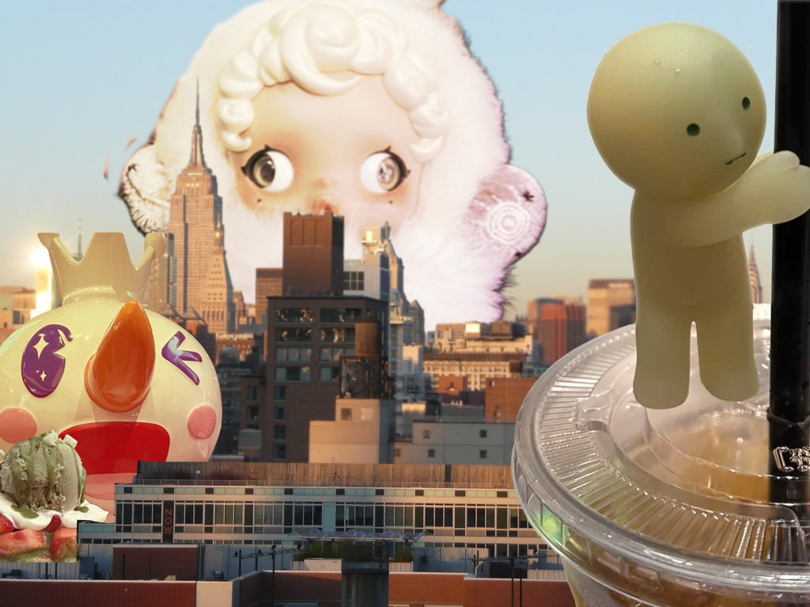
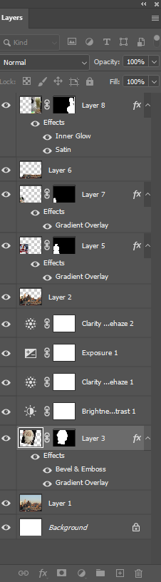

I wanted to create a photomontage that represented current trends and overconsumption. To do this, I used images of what is trendy on social media, such as blind box trinkets and popular foods.The picture of New York was found through Openverse while everything else came from my photos. By layering oversized objects on top of the cityscape, I wanted to show how these trends can take over a city. The exaggerated size of the objects was intentional in emphasizing how trends feel larger than life and impossible to ignore once they dominate social media feeds. I kept the eyes looking at the opposite sides on the big Skullpanda in order to show the absurdity of the photo. I chose the overlay blending mode for all of the items after masking them, and used an orange gradient. This was so I could match the overall lighting more closely with the warm lighting of the city and help blend the image in more. I also used layer masks instead of erasing parts of the images, so I could refine edges and make changes at any point in the process. Then I selected, and cut out some parts of the city so I could apply a blur to create more depth. Finally, I increased the exposure to blend the back of the city more with the Skullpanda.